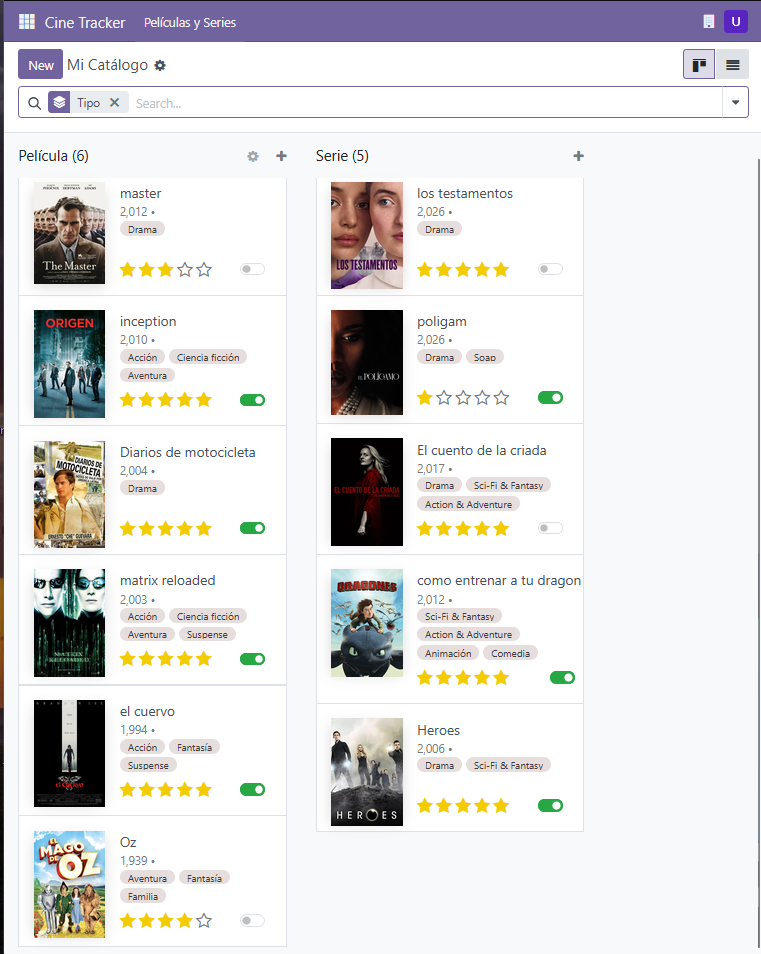
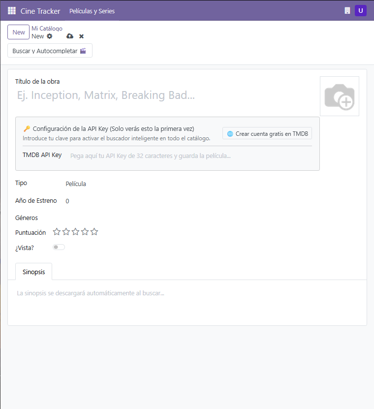
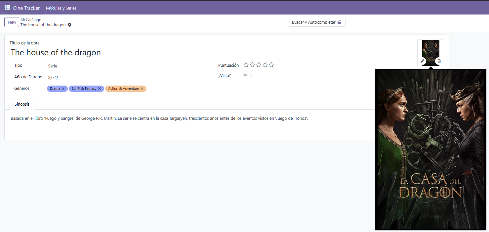

Gestiona Películas y Series en un mismo lugar con vistas Kanban y Lista.
Busca y autocompleta sinopsis, género, año y carátula con un solo clic.
Valora tus películas y series con un sistema de 5 estrellas.

Vista Kanban con tarjetas visuales

Formulario detallado de Película

Autocompletado inteligente con TMDB API
Desarrollado para Odoo 18 Community & Enterprise. Requiere una API Key gratuita de TMDB para el autocompletado.